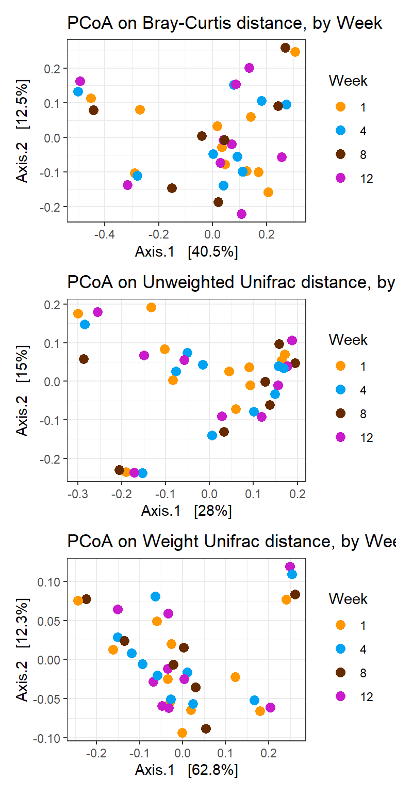

Beta Diversity Analysis
Last updated: 2020-06-16
Checks: 7 0
Knit directory: Fiber_Intervention_Study/
This reproducible R Markdown analysis was created with workflowr (version 1.6.2). The Checks tab describes the reproducibility checks that were applied when the results were created. The Past versions tab lists the development history.
Great! Since the R Markdown file has been committed to the Git repository, you know the exact version of the code that produced these results.
Great job! The global environment was empty. Objects defined in the global environment can affect the analysis in your R Markdown file in unknown ways. For reproduciblity it’s best to always run the code in an empty environment.
The command set.seed(20191210) was run prior to running the code in the R Markdown file. Setting a seed ensures that any results that rely on randomness, e.g. subsampling or permutations, are reproducible.
Great job! Recording the operating system, R version, and package versions is critical for reproducibility.
Nice! There were no cached chunks for this analysis, so you can be confident that you successfully produced the results during this run.
Great job! Using relative paths to the files within your workflowr project makes it easier to run your code on other machines.
Great! You are using Git for version control. Tracking code development and connecting the code version to the results is critical for reproducibility.
The results in this page were generated with repository version a16e6ef. See the Past versions tab to see a history of the changes made to the R Markdown and HTML files.
Note that you need to be careful to ensure that all relevant files for the analysis have been committed to Git prior to generating the results (you can use wflow_publish or wflow_git_commit). workflowr only checks the R Markdown file, but you know if there are other scripts or data files that it depends on. Below is the status of the Git repository when the results were generated:
Ignored files:
Ignored: .Rhistory
Ignored: .Rproj.user/
Ignored: analysis/figure/
Ignored: code/.Rhistory
Ignored: reference-papers/Dietary_Variables.xlsx
Ignored: reference-papers/Johnson_2019.pdf
Ignored: renv/library/
Ignored: renv/staging/
Untracked files:
Untracked: analysis/glme_microbiome_genus_subset.Rmd
Untracked: data/analysis-data/DataDictionary_TOTALS_2018Record.xls
Untracked: tab/tables_results_2020-06-08.zip
Untracked: tab/tables_results_2020-06-08/
Unstaged changes:
Modified: analysis/data_processing.Rmd
Modified: analysis/glme_microbiome.Rmd
Modified: analysis/microbiome_diet_trends.Rmd
Modified: code/get_cleaned_data.R
Modified: code/microbiome_statistics_and_functions.R
Modified: fig/figure2.pdf
Modified: fig/figure3.pdf
Modified: fig/figure4.pdf
Modified: fig/figure4_final_microbiome_diet_variables_over_time.pdf
Modified: fig/figure4_legend.pdf
Note that any generated files, e.g. HTML, png, CSS, etc., are not included in this status report because it is ok for generated content to have uncommitted changes.
These are the previous versions of the repository in which changes were made to the R Markdown (analysis/analysis_beta_diversity.Rmd) and HTML (docs/analysis_beta_diversity.html) files. If you’ve configured a remote Git repository (see ?wflow_git_remote), click on the hyperlinks in the table below to view the files as they were in that past version.
| File | Version | Author | Date | Message |
|---|---|---|---|---|
| html | 9da43aa | noah-padgett | 2020-06-08 | Build site. |
| Rmd | 94015da | noah-padgett | 2020-06-08 | revised figures |
| html | 94015da | noah-padgett | 2020-06-08 | revised figures |
| html | 0733fe5 | noah-padgett | 2020-05-21 | Build site. |
| Rmd | d576bdd | noah-padgett | 2020-05-21 | tables outputted |
| html | d576bdd | noah-padgett | 2020-05-21 | tables outputted |
| Rmd | ef7cab9 | noah-padgett | 2020-05-14 | blood measure analyses |
| Rmd | 25bfffd | noah-padgett | 2020-05-07 | fixed index references |
| html | 25bfffd | noah-padgett | 2020-05-07 | fixed index references |
| Rmd | 589bcf4 | noah-padgett | 2020-05-07 | updated figures |
| html | 589bcf4 | noah-padgett | 2020-05-07 | updated figures |
| Rmd | 2d97c53 | noah-padgett | 2020-04-16 | updated figure heights |
| html | 2d97c53 | noah-padgett | 2020-04-16 | updated figure heights |
| Rmd | 774a55f | noah-padgett | 2020-04-16 | updated beta diversity and permanova |
| html | 774a55f | noah-padgett | 2020-04-16 | updated beta diversity and permanova |
Beta-Diversity
General Ordination Plot
# Ordinate
pcoa <- ordinate(
physeq = phylo_data,
method = "PCoA",
distance = "bray"
)
# Plot
p <- plot_ordination(
physeq = phylo_data,
ordination = pcoa,
color = "Week",
shape = "Intervention",
title = "PCoA plot of community differences over time"
)
p +
geom_point(aes(color = Week), alpha = 0.7, size = 4) +
scale_color_manual(values = c("#a65628", "red", "#ffae19","#4daf4a")) +
geom_point(colour = "grey90", size = 1.5) 
PERMANOVA
Below, we present the permutation based ANOVA results for community differences. We conducted these analyses with three models
- Using Week
- Using Intervention
- Using Week \(\times\) Intervention interaction
Compute the distances matrices and get ordination objects.
# Calculate distance matrices
dist_bray <- phyloseq::distance(phylo_data, method = "bray")
dist_unwt <- phyloseq::distance(phylo_data, method="unifrac", weighted=F)
dist_wt <- phyloseq::distance(phylo_data, method="unifrac", weighted=T)
# plot ordination
ord_bray = ordinate(phylo_data, method="PCoA", distance=dist_bray)
ord_unwt = ordinate(phylo_data, method="PCoA", distance=dist_unwt)
ord_wt = ordinate(phylo_data, method="PCoA", distance=dist_wt)
# sample data
df <- data.frame(sample_data(phylo_data))
# colors
cols <- c("#fe9700","#00a2f2", "#662a00", "#c91acb","grey60","#858c69", "#a8863a", "#737373", "#d43f1f", "#5dd047", "#ffff59")Analysis by Week
p1 <- plot_ordination(phylo_data, ord_bray, color="Week") +
geom_point(size=3) +
scale_colour_manual(values=cols)+
labs(title="PCoA on Bray-Curtis distance, by Week")
p2 <- plot_ordination(phylo_data, ord_unwt, color="Week") +
geom_point(size=3) +
scale_colour_manual(values=cols)+
labs(title="PCoA on Unweighted Unifrac distance, by Week")
p3 <- plot_ordination(phylo_data, ord_wt, color="Week") +
geom_point(size=3) +
scale_colour_manual(values=cols)+
labs(title="PCoA on Weight Unifrac distance, by Week")
p1 + p2 + p3 + plot_layout(ncol=1)
# Bray-Curtis
adonis(dist_bray ~ Week, data = df)
Call:
adonis(formula = dist_bray ~ Week, data = df)
Permutation: free
Number of permutations: 999
Terms added sequentially (first to last)
Df SumsOfSqs MeanSqs F.Model R2 Pr(>F)
Week 3 0.0737 0.024579 0.18048 0.01614 1
Residuals 33 4.4941 0.136186 0.98386
Total 36 4.5679 1.00000 beta <- betadisper(dist_bray, df$Week)
permutest(beta)
Permutation test for homogeneity of multivariate dispersions
Permutation: free
Number of permutations: 999
Response: Distances
Df Sum Sq Mean Sq F N.Perm Pr(>F)
Groups 3 0.01379 0.0045955 0.3485 999 0.799
Residuals 33 0.43519 0.0131877 # Unweighted Unifrac
adonis(dist_unwt ~ Week, data = df)
Call:
adonis(formula = dist_unwt ~ Week, data = df)
Permutation: free
Number of permutations: 999
Terms added sequentially (first to last)
Df SumsOfSqs MeanSqs F.Model R2 Pr(>F)
Week 3 0.1176 0.039214 0.42432 0.03714 1
Residuals 33 3.0497 0.092415 0.96286
Total 36 3.1674 1.00000 beta <- betadisper(dist_unwt, df$Week)
permutest(beta)
Permutation test for homogeneity of multivariate dispersions
Permutation: free
Number of permutations: 999
Response: Distances
Df Sum Sq Mean Sq F N.Perm Pr(>F)
Groups 3 0.002658 0.0008861 0.1983 999 0.893
Residuals 33 0.147440 0.0044679 # Weighted Unifrac
adonis(dist_wt ~ Week, data = df)
Call:
adonis(formula = dist_wt ~ Week, data = df)
Permutation: free
Number of permutations: 999
Terms added sequentially (first to last)
Df SumsOfSqs MeanSqs F.Model R2 Pr(>F)
Week 3 0.01289 0.0042983 0.14493 0.013 1
Residuals 33 0.97871 0.0296578 0.987
Total 36 0.99160 1.000 beta <- betadisper(dist_wt, df$Week)
permutest(beta)
Permutation test for homogeneity of multivariate dispersions
Permutation: free
Number of permutations: 999
Response: Distances
Df Sum Sq Mean Sq F N.Perm Pr(>F)
Groups 3 0.003299 0.0010998 0.1571 999 0.922
Residuals 33 0.231081 0.0070025 Analysis by Intervention
p1 <- plot_ordination(phylo_data, ord_bray, color="Intervention") +
geom_point(size=3) +
scale_colour_manual(values=cols)+
labs(title="PCoA on Bray-Curtis distance, by Intervention")
p2 <- plot_ordination(phylo_data, ord_unwt, color="Intervention") +
geom_point(size=3) +
scale_colour_manual(values=cols)+
labs(title="PCoA on Unweighted Unifrac distance, by Intervention")
p3 <- plot_ordination(phylo_data, ord_wt, color="Intervention") +
geom_point(size=3) +
scale_colour_manual(values=cols)+
labs(title="PCoA on Weight Unifrac distance, by Intervention")
p1 + p2 + p3 + plot_layout(ncol=1)
# Bray-Curtis
adonis(dist_bray ~ Intervention, data = df)
Call:
adonis(formula = dist_bray ~ Intervention, data = df)
Permutation: free
Number of permutations: 999
Terms added sequentially (first to last)
Df SumsOfSqs MeanSqs F.Model R2 Pr(>F)
Intervention 1 0.3446 0.34458 2.8556 0.07544 0.015 *
Residuals 35 4.2233 0.12067 0.92456
Total 36 4.5679 1.00000
---
Signif. codes: 0 '***' 0.001 '**' 0.01 '*' 0.05 '.' 0.1 ' ' 1beta <- betadisper(dist_bray, df$Intervention)
permutest(beta)
Permutation test for homogeneity of multivariate dispersions
Permutation: free
Number of permutations: 999
Response: Distances
Df Sum Sq Mean Sq F N.Perm Pr(>F)
Groups 1 0.00598 0.0059801 0.5103 999 0.442
Residuals 35 0.41017 0.0117192 # Unweighted Unifrac
adonis(dist_unwt ~ Intervention, data = df)
Call:
adonis(formula = dist_unwt ~ Intervention, data = df)
Permutation: free
Number of permutations: 999
Terms added sequentially (first to last)
Df SumsOfSqs MeanSqs F.Model R2 Pr(>F)
Intervention 1 0.1786 0.178624 2.0918 0.0564 0.025 *
Residuals 35 2.9887 0.085392 0.9436
Total 36 3.1674 1.0000
---
Signif. codes: 0 '***' 0.001 '**' 0.01 '*' 0.05 '.' 0.1 ' ' 1beta <- betadisper(dist_unwt, df$Intervention)
permutest(beta)
Permutation test for homogeneity of multivariate dispersions
Permutation: free
Number of permutations: 999
Response: Distances
Df Sum Sq Mean Sq F N.Perm Pr(>F)
Groups 1 0.002663 0.0026630 0.7857 999 0.404
Residuals 35 0.118624 0.0033893 # Weighted Unifrac
adonis(dist_wt ~ Intervention, data = df)
Call:
adonis(formula = dist_wt ~ Intervention, data = df)
Permutation: free
Number of permutations: 999
Terms added sequentially (first to last)
Df SumsOfSqs MeanSqs F.Model R2 Pr(>F)
Intervention 1 0.06784 0.067841 2.5704 0.06842 0.068 .
Residuals 35 0.92376 0.026393 0.93158
Total 36 0.99160 1.00000
---
Signif. codes: 0 '***' 0.001 '**' 0.01 '*' 0.05 '.' 0.1 ' ' 1beta <- betadisper(dist_wt, df$Intervention)
permutest(beta)
Permutation test for homogeneity of multivariate dispersions
Permutation: free
Number of permutations: 999
Response: Distances
Df Sum Sq Mean Sq F N.Perm Pr(>F)
Groups 1 0.003642 0.0036417 0.6068 999 0.447
Residuals 35 0.210051 0.0060015 Analysis by Intervention
p1 <- plot_ordination(phylo_data, ord_bray,
color="Week", shape="Intervention") +
geom_point(size=3) +
scale_colour_manual(values=cols)+
geom_point(colour = "grey90", size = 1.5) +
labs(title="PCoA on Bray-Curtis distance, by Week & Intervention")+
theme(legend.position = "none")
p2 <- plot_ordination(phylo_data, ord_unwt,
color="Week", shape="Intervention") +
geom_point(size=3) +
scale_colour_manual(values=cols)+
geom_point(colour = "grey90", size = 1.5) +
labs(title="PCoA on Unweighted Unifrac distance, by Week & Intervention")+
theme(legend.position = "none")
p3 <- plot_ordination(phylo_data, ord_wt,
color="Week", shape="Intervention") +
geom_point(size=3) +
scale_colour_manual(values=cols)+
geom_point(colour = "grey90", size = 1.5) +
labs(title="PCoA on Weight Unifrac distance, by Week & Intervention")+
theme(legend.position = "bottom")
p1 + p2 + p3 + plot_layout(ncol=1)
# Bray-Curtis
adonis(dist_bray ~ Intervention*Week, data = df)
Call:
adonis(formula = dist_bray ~ Intervention * Week, data = df)
Permutation: free
Number of permutations: 999
Terms added sequentially (first to last)
Df SumsOfSqs MeanSqs F.Model R2 Pr(>F)
Intervention 1 0.3446 0.34458 2.50480 0.07544 0.027 *
Week 3 0.0757 0.02523 0.18336 0.01657 1.000
Intervention:Week 3 0.1582 0.05272 0.38324 0.03463 0.996
Residuals 29 3.9895 0.13757 0.87337
Total 36 4.5679 1.00000
---
Signif. codes: 0 '***' 0.001 '**' 0.01 '*' 0.05 '.' 0.1 ' ' 1beta <- betadisper(dist_bray, interaction(df$Intervention, df$Week))
permutest(beta)
Permutation test for homogeneity of multivariate dispersions
Permutation: free
Number of permutations: 999
Response: Distances
Df Sum Sq Mean Sq F N.Perm Pr(>F)
Groups 7 0.02637 0.0037678 0.2664 999 0.972
Residuals 29 0.41020 0.0141449 # Unweighted Unifrac
adonis(dist_unwt ~ Intervention*Week, data = df)
Call:
adonis(formula = dist_unwt ~ Intervention * Week, data = df)
Permutation: free
Number of permutations: 999
Terms added sequentially (first to last)
Df SumsOfSqs MeanSqs F.Model R2 Pr(>F)
Intervention 1 0.1786 0.178624 1.86888 0.05640 0.046 *
Week 3 0.1121 0.037379 0.39108 0.03540 0.999
Intervention:Week 3 0.1048 0.034937 0.36553 0.03309 1.000
Residuals 29 2.7718 0.095579 0.87511
Total 36 3.1674 1.00000
---
Signif. codes: 0 '***' 0.001 '**' 0.01 '*' 0.05 '.' 0.1 ' ' 1beta <- betadisper(dist_unwt, interaction(df$Intervention, df$Week))
permutest(beta)
Permutation test for homogeneity of multivariate dispersions
Permutation: free
Number of permutations: 999
Response: Distances
Df Sum Sq Mean Sq F N.Perm Pr(>F)
Groups 7 0.021912 0.0031302 0.6816 999 0.708
Residuals 29 0.133173 0.0045922 # Weighted Unifrac
adonis(dist_wt ~ Intervention*Week, data = df)
Call:
adonis(formula = dist_wt ~ Intervention * Week, data = df)
Permutation: free
Number of permutations: 999
Terms added sequentially (first to last)
Df SumsOfSqs MeanSqs F.Model R2 Pr(>F)
Intervention 1 0.06784 0.067841 2.28504 0.06842 0.098 .
Week 3 0.01366 0.004553 0.15337 0.01378 0.999
Intervention:Week 3 0.04912 0.016372 0.55144 0.04953 0.846
Residuals 29 0.86099 0.029689 0.86828
Total 36 0.99160 1.00000
---
Signif. codes: 0 '***' 0.001 '**' 0.01 '*' 0.05 '.' 0.1 ' ' 1beta <- betadisper(dist_wt, interaction(df$Intervention, df$Week))
permutest(beta)
Permutation test for homogeneity of multivariate dispersions
Permutation: free
Number of permutations: 999
Response: Distances
Df Sum Sq Mean Sq F N.Perm Pr(>F)
Groups 7 0.018049 0.0025784 0.3502 999 0.918
Residuals 29 0.213534 0.0073632 Beta diversity plot (Figure 2)
p1 <- plot_ordination(phylo_data, ord_bray, color="Week") +
geom_point(size=3) +
scale_colour_manual(values=cols)+
labs(title="PCoA on Bray-Curtis distance, by Week")
p2 <- plot_ordination(phylo_data, ord_wt, color="Week") +
geom_point(size=3) +
scale_colour_manual(values=cols)+
labs(title="PCoA on Weight Unifrac distance, by Week")
dat.bray <- p1$data
dat.wt <- p2$data
so <- distinct(microbiome_data$meta.dat, SubjectID, .keep_all = T)
subjectorder <- so$SubjectID[order(so$Intervention, decreasing = F)]
dat.bray$SubjectID10 <- factor(dat.bray$SubjectID,
levels = subjectorder,
labels=c(1:11))
dat.wt$SubjectID10 <- factor(dat.wt$SubjectID,
levels = subjectorder,
labels=c(1:11))
ids <- 1:6
dat.bray$Intervention2 <- ifelse(dat.bray$SubjectID10 %in% ids, "Group A", "Group B")
dat.wt$Intervention2 <- ifelse(dat.wt$SubjectID10 %in% ids, "Group A", "Group B")
p1 <- ggplot(dat.wt, aes(x=Week, y=Axis.1, color=Intervention2)) +
geom_point(size=3)+
facet_wrap(.~SubjectID10,ncol=6) +
scale_color_manual(values=cols)+
labs(y="PC1",
title="Individualized beta-diversity over study duration")+
guides(colour= guide_legend(title = "Intervention"))+
theme(panel.grid = element_blank(),
strip.text.x = element_text(angle = 0, size = 11, face = "italic"),
axis.text.y = element_text(size = 10),
axis.title = element_text(size = 10),
plot.title = element_text(hjust = 0.5),
#axis.title.x = element_blank(),
strip.background = element_blank(),
legend.position = c(0.92, 0.25),
#legend.text = element_text(size = 7),
#legend.title = element_blank(),
panel.spacing.x=unit(0.001, "lines"))
p1 library(cowplot)
#p1.leg <- get_legend(p1)
#p1.nl <- p1 + theme(legend.position = "none")
ggsave("fig/figure2.pdf", p1, width=7.9,height=4.5, units="in")
#bigplotlegend <- plot_grid(p1.leg, nrow =1)
#save_plot("fig/figure2_legend.pdf", bigplotlegend,
# base_width = 7.9, base_height = 4.5)Beta diversity plot (Figure 3)
p1 <- plot_ordination(phylo_data, ord_bray,
color="Intervention", shape="Week") +
geom_point(size=3) +
scale_colour_manual(values=cols)+
labs(title="PCoA on Bray-Curtis distance",
tag="A")+
theme(panel.grid = element_blank(),
axis.title = element_text(size = 10),
plot.title = element_text(hjust = 0.5))
p2 <- plot_ordination(phylo_data, ord_unwt,
color="Intervention", shape="Week") +
geom_point(size=3) +
scale_colour_manual(values=cols)+
labs(title="PCoA on Unweighted Unifrac distance",
tag="B")+
theme(panel.grid = element_blank(),
axis.title = element_text(size = 10),
plot.title = element_text(hjust = 0.5))
p3 <- plot_ordination(phylo_data, ord_wt,
color="Intervention", shape="Week") +
geom_point(size=3) +
scale_colour_manual(values=cols)+
labs(title="PCoA on Weight Unifrac distance",
tag="C")+
theme(panel.grid = element_blank(),
axis.title = element_text(size = 10),
plot.title = element_text(hjust = 0.5))
library(cowplot)
p1.leg <- get_legend(p1)
p1.nl <- p1 + theme(legend.position = "none")
p2.nl <- p2 + theme(legend.position = "none")
p3.nl <- p3 + theme(legend.position = "none")
#p <- p1.nl + p2.nl + p3.nl + plot_layout(ncol=1, guides="collect")
p <- p1 + p2 + p3 + plot_layout(ncol=1, guides="collect")
p
ggsave("fig/figure3.pdf", p, width=5,height=7, units="in")
#bigplotlegend <- plot_grid(p1.leg, nrow =1)
#save_plot("fig/figure3_legend.pdf", bigplotlegend,
# base_width = 7.9, base_height = 4.5)
sessionInfo()R version 3.6.3 (2020-02-29)
Platform: x86_64-w64-mingw32/x64 (64-bit)
Running under: Windows 10 x64 (build 18362)
Matrix products: default
locale:
[1] LC_COLLATE=English_United States.1252
[2] LC_CTYPE=English_United States.1252
[3] LC_MONETARY=English_United States.1252
[4] LC_NUMERIC=C
[5] LC_TIME=English_United States.1252
attached base packages:
[1] stats graphics grDevices utils datasets methods base
other attached packages:
[1] cowplot_1.0.0 microbiome_1.8.0 car_3.0-8 carData_3.0-4
[5] gvlma_1.0.0.3 patchwork_1.0.0 viridis_0.5.1 viridisLite_0.3.0
[9] gridExtra_2.3 xtable_1.8-4 kableExtra_1.1.0 plyr_1.8.6
[13] data.table_1.12.8 readxl_1.3.1 forcats_0.5.0 stringr_1.4.0
[17] dplyr_0.8.5 purrr_0.3.4 readr_1.3.1 tidyr_1.1.0
[21] tibble_3.0.1 ggplot2_3.3.0 tidyverse_1.3.0 lmerTest_3.1-2
[25] lme4_1.1-23 Matrix_1.2-18 vegan_2.5-6 lattice_0.20-38
[29] permute_0.9-5 phyloseq_1.30.0
loaded via a namespace (and not attached):
[1] Rtsne_0.15 minqa_1.2.4 colorspace_1.4-1
[4] rio_0.5.16 ellipsis_0.3.1 rprojroot_1.3-2
[7] XVector_0.26.0 fs_1.4.1 rstudioapi_0.11
[10] farver_2.0.3 fansi_0.4.1 lubridate_1.7.8
[13] xml2_1.3.2 codetools_0.2-16 splines_3.6.3
[16] knitr_1.28 ade4_1.7-15 jsonlite_1.6.1
[19] workflowr_1.6.2 nloptr_1.2.2.1 broom_0.5.6
[22] cluster_2.1.0 dbplyr_1.4.4 BiocManager_1.30.10
[25] compiler_3.6.3 httr_1.4.1 backports_1.1.7
[28] assertthat_0.2.1 cli_2.0.2 later_1.0.0
[31] htmltools_0.4.0 tools_3.6.3 igraph_1.2.5
[34] gtable_0.3.0 glue_1.4.1 reshape2_1.4.4
[37] Rcpp_1.0.4.6 Biobase_2.46.0 cellranger_1.1.0
[40] vctrs_0.3.0 Biostrings_2.54.0 multtest_2.42.0
[43] ape_5.3 nlme_3.1-144 iterators_1.0.12
[46] xfun_0.14 openxlsx_4.1.5 rvest_0.3.5
[49] lifecycle_0.2.0 statmod_1.4.34 zlibbioc_1.32.0
[52] MASS_7.3-51.5 scales_1.1.1 hms_0.5.3
[55] promises_1.1.0 parallel_3.6.3 biomformat_1.14.0
[58] rhdf5_2.30.1 curl_4.3 yaml_2.2.1
[61] stringi_1.4.6 S4Vectors_0.24.4 foreach_1.5.0
[64] BiocGenerics_0.32.0 zip_2.0.4 boot_1.3-24
[67] rlang_0.4.6 pkgconfig_2.0.3 evaluate_0.14
[70] Rhdf5lib_1.8.0 labeling_0.3 tidyselect_1.1.0
[73] magrittr_1.5 R6_2.4.1 IRanges_2.20.2
[76] generics_0.0.2 DBI_1.1.0 foreign_0.8-75
[79] pillar_1.4.4 haven_2.3.0 whisker_0.4
[82] withr_2.2.0 mgcv_1.8-31 abind_1.4-5
[85] survival_3.1-8 modelr_0.1.8 crayon_1.3.4
[88] rmarkdown_2.1 grid_3.6.3 blob_1.2.1
[91] git2r_0.27.1 reprex_0.3.0 digest_0.6.25
[94] webshot_0.5.2 httpuv_1.5.2 numDeriv_2016.8-1.1
[97] stats4_3.6.3 munsell_0.5.0